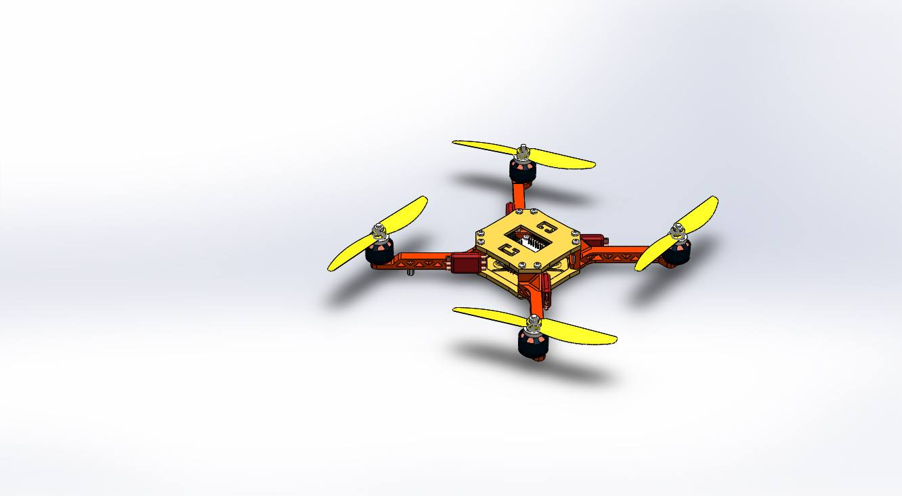

| # | নাম | মওকা দিবসের চেষ্টা | মন্তব্য |
|---|---|---|---|
| 1 | Mohiuddin Rabby | 2D array গত দু'মাসেও করা হচ্ছিলো না। আজ পুরোপুরি শেষ করলাম। | function,array aigula আগেই করেছি। এরপর data structure শিখবো, ইনশাআল্লাহ্। |
| 2 | Ahammed Ibrahim | ৫ ঘন্টা টানা কোড করেছি, আরও ৫ ঘন্টা আজকে করবো, ইনশাআল্লাহ্। | |
| 3 | Fahim Alpha | আমি ফিল্ম মেকার হতে চাই. সামনে একটা নাটক বানাবো। গল্প মাথায় আছে কিস্তু স্ক্রিপ্ট লেখা শুরু করা হচ্ছে না. স্ক্রিটপটি লেখা কিছুতেই শুরু করতে পারছিলাম না. আজ স্ক্রিটপটি নিয়ে বসলাম. এবং স্ক্রিপ্টটা লিখে ফেললাম। | এরপর খুব দ্রুত শুটিঙের কাজে নেমে পড়বো। |
| 4 | Shariful Islam | অনেকটা সময় নিয়ে Python এর basic(input/output,string,string operation,type convertion,variable,inplace operators) এসব শিখলাম। | Python নিয়ে ভবিষ্যতে কাজ করা। |
| 5 | Washiul Alam Sohan | প্রায় সময়েই ফেসবুক এ অনেক পোস্ট দেখি, রক্তের সন্ধান করছে, কিন্তু পাওয়া যাচ্ছেনা। একই কারনে আমার আপন মামার মৃত্যু ঘটেছে কয়েকদিন আগে। রক্ত না পাওয়ার জন্য, তাই চেষ্টা করছি প্রযুক্তির এই যুগ এ প্রযুক্তি দিয়েই রক্ত সন্ধানের এই সমস্যাটির সমাধান করার। প্রায় ২ মাস এর বেশি সময় থেকে একটি প্রোজেক্ট নিয়ে কাজ করছিলাম যাতে এই রক্ত দানকারী সন্ধানের সমস্যাটা সমাধান হবে, সহজেই খুজে পাওয়া যাবে। আশে পাশে সেই রক্তের গ্রুপ নিয়ে কেউ আছে কিনা যিনি রক্তদানে ইচ্ছুক। সেই ওয়েব অ্যাপটিরই ব্লাড ডোনার অনুসন্ধানের সময় তার ছবিটিও যাতে যে খুজছেন সে দেখতে পায় সেই নিয়েই কাজ করার কথা ছিলো কয়েকদিন থেকে। আলসেমির জন্য করতে পারিনি, আপনার পোস্ট দেখা মাত্রই মনে আসলো, শুরু করে দিলাম। আর এই এখন আমি কাজ শেষ করে ফিচারটি ১০১ বার নানা ডিভাইস দিয়ে টেস্ট করে আপনাকে জানাতে বসেছি। | গুগল ম্যাপ এপিআইটাও যোগ করার ইচ্ছা আছে। |
| 6 | সাদিকুর রহমান খান | ফিজিক্সের একটা চ্যাপ্টারের ত্রিশটা প্রবলেম সলভ করেছি নিজে নিজেই। বহুদিন করতে চেয়েও করিনি, কারণ ওগুলোর সমাধান দেওয়া ছিলো না!! না করতে পারার ভয় ছিলো। | এরকম যত প্রবলেম আছে, যেগুলো সলভ করে দেওয়া নাই, সব করে ফেলবো এক এক করে। |
| 7 | Fahim Hossain Tushar | আমি এফিলিয়েট মার্কেটিং করি। অফ্লাইন এর কাজের চাপে হলিডে ছাড়া কাজ করা হয় না তাই আজ সারাদিন এ ৮ ঘন্টা+ কাজ করলাম। হয়তো কাজ ঠিকই করতাম বাট টার্গেট নেওায়য় একটু বেশিই করতে পেরেছি। | সবাই চায় কাজের পরিধি বারাতে। তাই কাজের সাথে বাড়তি করেছি কিওয়ার্ড ও নিস রিসার্চ ২০১৮ এ একটি বিগ প্রজেক্ট করার জন্য। |
| 8 | জান্নাতুল ফেরদৌস মুনিয়া | ১.অনেকদিন ধরে শু,স্যান্ডেল ক্লিন করা হচ্ছিল না, আজকে পুরো ডেস্কসহ পরিষ্কার করে ফেললাম ২. নিজের যত্ন নেয়া খুব কম হয় আলসেমীর কারনেই, তাই আজকে একটা হেয়ার স্পা করে ফেললাম ৩.নতুন বছরের কিছু প্ল্যান টুকে রাখলাম | সময়ের কাজ সময়ে করতে চাই। |
| 9 | Nogib Anwar Zafi | ভাই এইটা আকসি আজকে সলিডওয়ার্ক্সে। খুব ভালো লাগতেসে। এর আগে কখনো এত ধৈর্য্য ধরে কাজ করি নাই। ধন্যবাদ ভাই। |  |
| 10 | তানভীর হাসান সিয়াম | রিইউনিয়ন টিশার্ট ডিজাইন। | গত বছর আখেরি মওকা পালন করার পর মাসে একবার পালন করার সিধান্ত নিলেও সেভাবে পালন করা হয় নি। তাই এবারের মওকায় আগে থেকেই সিধান্ত নিলাম কোন কাজটা বার বার ফেলে রাখা হচ্ছে এবং আলসেমি করা হচ্ছে। |
| 11 | Shahed Mehbub | Finished nanodegree course on Git & Github from Udacity | I'll try to embrace git in all of later my projects |
| 12 | শাহিনুর রহমান | প্রফেশনাল ভিডিও ক্যামেরা (Sony FS5) অপারেটিং শেখার চেষ্টা করেছি। | নিয়মিত প্র্যাকটিস করে ভিডিও ক্যামেরা অপারেটিং এ দক্ষ হতে চাই। |
| 13 | Sajidul Islam | আখেরি মওকা পোস্টটা দেখে কালকে 3 ঘন্টা নিজের জন্য ব্যায় করে একটা সিরিজ পুরোটা শেষ করেছি, যেটা কিনা একমাস থেকে দেখবো দেখবো করেও দেখি নাই। আর আজকে ৫ ঘন্টা সময় নিয়ে ২মাস থেকে পড়ে থাকা প্রজেক্ট এর কাজ করবো করবো বলে না করা কাজ প্রায় করে ফেলেছি। SQLite ডাটাবেজটা ক্লিয়ার করেছি। | SQLite database দিয়ে একটা quiz app বানাবো সামনে। |
| 14 | রিদোয়ানুল ইসলাম | html শেখার চেষ্টা করেছি (প্রাথমিক) কাজগুলো... নিজের নামে একটা ফকির মার্কা ওয়েবসাইট বানিয়েছি। | আরো বড় পরিসরে কাজ শিখতে চাই। |
| 15 | Abdullah al Rumon | আমার একটা research paper, একটা International conference FTC-18 IIT , DELHI. (Functional Textile and Clothing Conference) এ সিলেক্ট হয়েছে। সেটার জন্য revised paper লেখা বাকি ছিল। আজকে শুরু করেছি। | Functional Textile নিয়ে আরও বেশি research related কাজ করতে চাই। |
| 16 | আসিফ | কার্যকর ই-মেইল লেখা। | সঠিক সময়ে এটাকে কাজে লাগাতে চাই। |
| 17 | Sofiqul Islam Rony | I have done English speaking practice with my friend about 5 and half an hours! | English speaking কাজে লাগবে এমন কোন job করতে চাই। |
| 18 | সামিউল সিদ্দিকী শাকিল | আমি লাস্ট ৫ দিনের প্রতিদিনই পিএইচপি শেখার চেষ্টা করতেছি, আর আজকের ৫ ঘন্টায় আমি Form method, get method, date time, include, require, session, mysql basic শিখেছি, এবং প্র্যাকটিস করেছি। | সামনে পিএইচপি শিখে লারাভেল শিখতে চাই। |
| 19 | আকিলা রহমান | আমি আজকে Soccer Robot নিয়ে কাজ করার চেষ্টা করছি। | আজকে যে Soccer Robot টি বানানোর চেষ্টা করছি সেটা Android Control আমি চেষ্টা করব সেটাকে নিজে নিজে কাজ করানোর যাতে রোবট টি নিজে নিজে চিন্তা করে কাজ করতে পারে । |
| 20 | কিশোর চক্রবর্ত্তী | আমি আমার টাইপিং স্পিড বাড়ানোর চেষ্টা করেছি । বাংলা ইংরেজী নিয়ে প্রায় পাঁচ হাজারের উপর ওয়ার্ড টাইপ করেছি । | আমি চাই বাংলা ও ইংরেজী দুটোতে প্রতি মিনিটে যতাক্রমে ৫০ ও ৭০ গতি উঠাতে । |
| 21 | আশিক | জাভা প্রোগ্রামিং শেষ করে একটি android apps ও game বানিয়েছি। | আরও কিছু প্রোগ্রামিং ল্যাঙুয়েজ শিখতে চাই। |
| 22 | Shawon Roy | অনেক দিন ধরে চেষ্টা করে সম্পূর্ন করতে পারিনি আজ আখেরি মকা দিয়ে সুরু দিলাম এবং একটা PSD TO HTML সম্পূর্ন করলাম। | আমি এটা নিয়ে আরো সমনে এগিয়ে যেতে চাই এবং থিমফরেষ্ট এর মত সাইটে প্রিমিয়াম কোয়ালিটির Template সাবমিট করতে চাই। |
| 23 | Naimur Rahman Saikot | স্পোকেন ইংলিশ প্রাকটিস, একটা এস্যাইনমেন্ট আর বঙ্কিমচন্দ্র চট্টোপাধ্যায়ের একটি উপন্যাস। | এমন কাজ প্রতি সপ্তাহেই করতে চাই। |
| 24 | Sariqul Basar | কাজের চাপে নিজের ইকমার্স ("ডিজিটাল প্রোডাক্ট" সেল করার সাইট) টায় অনেক দিন যাবৎ সময় দেওয়া হচ্ছিল না। ঐটায় সময় দিলাম। | ডিজিটাল প্রোডাক্ট যেমনঃ পিএসডি, টেমপ্লেট, ওয়ার্ডপ্রেস থিম, প্লাগিন, অ্যাপ ইত্যাদি সেল করতে চাই। |
| 25 | shimul roy | discrete math করেছি। | আরো একবার পড়বো |
| 26 | prashanto modak | spend more than 5 hours for making a clear conception about Endocrinology. | I"ll make a crystal clear conception about endocrine pathology ; as I am a 5th year medical student |
| 27 | Alif salek | আমার সকাল থেকেই ইচ্ছে ছিল ৫ঘন্টা phyiscs পড়বো। আজ ৬ঘন্টায় phyiscs এর ৩ chapter শেষ করেছি। | |
| 28 | Walid | কোডিং এ ইন্ট্রেস্ট আগে থেকে। আজকে এইচটিমিএল এবং সিএসএস দিয়ে দুটা পেইজ বানালাম। | সামনে ওয়েব ডিজাইন শেখার পর ওয়ার্ডপ্রেস শিখব তারপর ডেভেলপমেন্টে যাব ইনশাল্লাহ |
| 29 | ঈশিতা দাশ | পদার্থ বিজ্ঞান ২য় পত্র (চল তড়িৎ ,স্থির তড়িৎ )। | |
| 30 | এ বি এম মাহাবুবুল হক | বেসিক ভিডিও ইডিটিং শিখেছি ইউডেমির একটা কোর্স থেকে। | ভিডীও ইডিটিং এবং গ্রাফিক ডিসাইনে আরো ভালো করতে চাই। |
| 31 | Antu khan | DEVELOPING A GAME IN UNREAL ENGINE | I want develop a game that will be the biggest , highest graphics game in BD |
| 32 | শোয়াইব | ইমেইল মার্কেটিং এর জন্য 5 হাজার মেইল কালেক্ট করছি.নিশ রিলেটেড | মেইল গুলো সেন্ড করার একটা সার্ভার খুজতে হবে এবং এটা কনটিনিউ করবো.. |
| 33 | Tanvir Ahmed Kaif | A chapter of Mathematics, 1st paper which felt like the most difficult one for me and another chapter from Physics 1st paper. | Well,wanna finish the rest of books preety soon. |
| 34 | Riazul Islam | নিজের পোর্টফলিও ওয়েব সাইটের কোডিং করেছি। | অনেক দিন ধরে চাচ্ছি নিজের পোর্টফলিও সাইটের কোডিং করবো। কিন্তু হচ্ছিল না। আজকে সাত ঘন্টায় কোন রকম একটা ডিজাইন করলাম। আমার ইচ্ছা ওয়েব সাইটে আমার দক্ষতা ও প্রফেশনাল লেভেল ফুটিয়ে তোলা। |
| 35 | এ.আর ওমরফারুক | গীটার পরিচালনা। | ভবিষ্যতে একজন গায়ক হতে চাই,তাই গীটার পরিচালনা করার জ্ঞান আরো বাড়াবো।সাথে আরো দরকারী কিছু। |
| 36 | মিজানুর রহমান | I have read 'The secret'. | I want to read more such kind of book |
| 37 | Sabit | C programming (Loop) and Try to learn about mobile photography. | I want to learn this language properly and I want to capture some wonderful photo through the mobile phone and prove it that photo first comes from the mind. |
| 38 | Zakia Siddiqua Rabiya |
|
একটানা অন্য কোথাও মনযোগ না দিয়ে সেই কাজে ধ্যান দিলে কাজে বরকত অনেক বেড়ে যায়।টানা ৫ঘন্টা ফেবু থেকে দূরে থাকার ইতিহাস |
| 39 | Md Abdur Rohim | আমার সাইট rangpata.com এর জন্য অনলাইন কোন ads নেটওয়ার্ক ব্যবহার | আগামীতে নিজেই বিজ্ঞাপন দাতাদের নিকঠ থেকে কিভাবে বিজ্ঞাপন পেতে পারি সে বিষয়ে কাজ করবো। |
| 40 | Md jahidul Bin Rafiq | Learn basic HTML | I want to learn CSS and JS |
| 41 | Khadija Akter Lima | I tried to clear concept of pointer in C . I read the book Programming with C. | I want to be a programmer . I want to learn c++ and python also. |
| 42 | Raian Rahman | প্রোগ্রামিং এর বলদ টু বস বইটা পড়েছি আর সর্টিং algorithm শেখার চেষ্টা করেছি। | competitive programming শিখতে চাই। |
| 43 | Rezwan Ahmed Ovi | 5 hour Typing করেছি। | নিজের টাইপিং দক্ষতা-কে আরও ভালো করতে চাই। |
| 44 | Sajib | টাইপিং এর টিউটোরিয়াল দেখলাম। tipp10 নামালাম। তারপর একটানা ৫ ঘন্টা টাইপিং করার চেষ্টা করলাম | বাংলাদেশের সেরা typist হতে চাই। |
| 45 | অবন্তী | টাইপিং, ইংলিশ রিডিং | আগামী এক মাসে typing.com এ কোর্স কমপ্লিট করা। |
| 46 | Alid Hasan Akash | ফটোশপ এ ব্রাশ বানানো পুরোটা শিখছি। | ব্রাশ বানানোর আরো বেশী ডিজাইন শিখব আর সেগুলো কিছু সাইট এ বিক্রির চেষ্টা করবো |
| 47 | Md Abu Sayim | ধরি ধরি করে ধরা হয়নি। আজকে ৩ ঘন্টা প্রফিট-লস কমপ্লিট করে ফেললাম। | |
| 48 | Iqramul Hasan | Completed the basic WordPress video series. | Want to be a boss in WordPress. |
| 49 | মাহমুদা মৌ | ভেক্টর প্রোট্রেট করার চেষ্টা করেছি। অনেক সাহস নিয়ে লোগো ডিজাইনের উপর গিগ দিয়েছি। | ফ্রিলেন্সিং এ ক্যারিয়ার গড়ার ইচ্ছে আছে। |
| 50 | Zulfikar Alom | I have finished Course I in machine learning course in Coursera. | I want to develop intelligence system/project for medical patients. |
| 51 | Sukanta Mazumder | Basic Robotics, Arduino and Electronics নিয়ে জানার চেষ্টা করেছি। | রোবোটিক্স এ বাংলাদেশকে এগিয়ে নিতে চাই বিশ্বদরবারের সামনে। |
| 52 | Tusher Roy | গণদেবতা উপন্যাসটি পড়েছি। | পড়াশোনার মাত্রা বাড়ানোর পাশাপাশি কিছু একটা করার চেষ্টায় আছি। |
| 53 | নাসিফ ইশতিয়াক ইসলাম | MS Powerpoint '16 | |
| 54 | ASIF AHMED SAJAL | 2d Animation making | এনিমেশন শিখে মজার মজার ভিডিও নিয়ে YOUTUBE চ্যানেল করব। ২০১৮ তে YOUTUBE চ্যানেলটিকে ১ লাখ সাবস্ক্রাইবার করতে চাই। |
| 55 | আফসানা মীম | PHP এর বিভিন্ন syntax, form validation, email validation. | PHP টা ভাল্ভাবে শিখতে চাই যেনো Back-end এর কাজ করতে পারি। |
| 56 | মোঃ সালাউদ্দীন | অনেক দিন থেকে জাভা এবং অ্যান্ড্রয়েড এর উপর টিউটোরিয়াল বানাব বলে ভাবছিলাম, তার একশ ভাগের এক ভাগ শেষ করেছি। | তার একশত ভাগই সম্পূর্ন করতে চাই। |
| 57 | Nogib Anwar Zafi | Completed 75% design of A quad copter in Solidworks | Want to develop it for further research and publish a paper on it. |
| 58 | Sourov Mohiuddin | আখেরি মওকা তে আমি codeforces.com থেকে ৩ টা প্রব্লেম সলভ করছি। | |
| 59 | আদীব ইবনে আমিনুল | অডিও স্পেকট্রাম ডিজাইন। | সামনে মার্কেট প্লেসে কাজ করতে চাই এবং নিজের একটা অ্যাফিলিয়েট ওয়েবসাইট খুলতে চাই। |
| 60 | Md.Morshed Alam Masud | Programming (python) | I want to learn django |
| 61 | Md Mohiuddin Sourov | Programming Problem Solving | I want to solve at least 1000 problems in different online judge websites. |
| 62 | Umme Kulsum Tonni | Student accommodation system using javafx taking help from some tutorial about javafx basics. | I want to make a complete student accommodation system using java including database that can be helpful for my university .... want to make software based on it. |
| 63 | সৌরভ পাল | প্রোগ্রামিং | problem solving এ দক্ষতা অর্জন করতে চাই আর C language ভালোভাবে শিখে JAVA তে কাজ করতে চাই। |
| 64 | আরাফাত আহমেদ লীজান | Crated a Fivrr Account | |
| 65 | Manjarul Islam Saiakt | I’m trying to learn a course (Digital logic design) from YouTube . | I will take this course(DLD) in the next semester that’s why I’m trying to learn this from online. |
| 66 | Md. Ariful Islam Remon | Logo designing | Become a pro logo designer in freelancing sector. |
| 67 | S.m. Raihan Rahman | আমি IELTS এর প্রিপারেশন নেয়া শুরু করছি। | একটানা ৩ ঘন্টা দিছি। পুরা ৫ ঘন্টা দিতে পারি নাই। আমি সেই রকম ইনভায়রনমেন্ট ও পাই নাই। |
| 68 | Mohammad Israfil | Web design | Development করতে চাই |
| 69 | মোঃআরিফ উদ্দিন | কিভাবে Adobe Muse দিয়ে কত কম সময়ে একটি ওয়েবসাইট তৈরি করা যায় । | ওয়েব ডিজাইন এর এর উপর আরো এক্সপার্ট হয়ে ...তারপর ডেভেলপমেন্ট নিয়ে ভাবছি। এর জন্য পিএইচপি ও কিছুটা হাত করে নিচ্ছি । |
| 70 | Mirza Nafis | I learn webcrawling & regular exression. | দোয়া কইরেন |
| 71 | Al Foisal | I have completed "home page" for my new company website | |
| 72 | মোঃ যায়েদ হাসান ইমরান | বুটস্ত্রাপ(Bootstrap) শিখতে চেষ্টা করছি । | এই প্রথম সকাল ৯ঃ৫৭ এ.এম থেকে সন্ধ্যা ৭ঃ৩২ পি.এম পর্যন্ত অনেক চেষ্টা করে ৫ বারে পিওর ৫ঘনটা সময় দিলাম এবং অনেক কিছু শিখলাম।আপনি না বললে এটা হতো না। আখেরি মওকা না হলে এটা হতো না। |
| 73 | Rahul Das | PHP Fundamental | I want to be a professional web developer in future. I've encouraged by your great initiative. Thanks |
| 74 | MD. AL-AMIN | আমি জাভা প্রোগ্রামিং প্রাকটিস করেছি, ইউটিউবে জাভার কিছু ভিডিও দেখেছি। হ্যাকার র্যাংক থেকে জাভা রিলেটেড একটা প্রবলেম সলভিং করেছি। নেটবিন্স-এ বন্ধুদের নাম কোড করে লিখে তাদের ফেইসবুকে সেন্ড করে দিছি। | ”অাখেরি মওকা-2017” আয়োজন করার জন্য। অপেক্ষায় থাকব- “আখেরি মওকা-2018” এর জন্য। |
| 75 | Minhazul islam sohag | একটা সফটওয়্যারের একটা পার্ট তৈরি করছি। | আমাদের লক্ষ হচ্ছে আমরা একটি web browser তৈরি করবো। যেটা opera or uc browser থেকেও উন্নত ,যেটা আমাদের দেশের মানুষের জন্য খুব ফ্রেন্ডলি। |
| 76 | মোহাম্মদ শাহরিয়ার ইউনুছ আশিক | কিছু প্রোগ্রামিং প্রব্লেম নিয়ে বিশেষ করে প্রাইম নাম্বার সম্পর্কিত | সামনে এসিএম আইসিপিসিতে অংশগ্রহণ করে ভাল একটা পজিশনে থাকতে চাযই।এভাবে আমাদেরকে উৎসাহিত করতে থাকুন ভাই। |
| 77 | ওয়াসিমা নূর ইকরা | "হাবলুদের জন্য প্রোগ্রামিং" এবং "প্রোগ্রামিং এর বলদ টু বস" দুইটা বই-ই আবার রিভিশন দিলাম।প্র্যাক্টিস করলাম। | এরপর সামনে তামিম শাহরিয়ার সুবিনের কম্পিউটার প্রোগ্রামিং এর বই দুইটা কমপ্লিট করবো। |
| 78 | Md.Ahesanul Haque Khan | idioms and phrases সবগুলো পড়ে শেষ করেছি | ইংরেজিতে অারও বেশি পারদর্শী হতে চাই। ইংরেজির ভয়কে দূর করতে চাই। |
| 79 | Akram Hossain Rickon | Basic Recursion and Chess game learning | ৫ ঘণ্টা সময় দেয়ার কথা থাকলেও মোট সময় দিয়েছি ৭ ঘণ্টা। এভাবে determined হয়ে বসলে আসলেই কিছু না কিছু শেখা হয়।প্রতি মাসে এ রকম উদ্যোগ নিলে মন্দ হয় না :) |
| 80 | Fardeen Rahman | Problem solving | ACM ICPC তে participate করে ফাইনাল এ যেতে চাই। |
| 81 | Al Mustakim(Badhon Md Abdullah) | Android App development | আমি অলরেডি ৮ ঘন্টা কম্পলিট করেছি, বৃ্হস্পতি শুক্র আমার অফ ডে। আমার করবো করবো করে শুরু না করা কাজগুলো শুরু করার প্রেরণা দেয়ার জন্য ধন্যবাদ। |
| 82 | মাইদুল ইসলাম | আমি ৫ থেকে ৭ ঘন্টা জি-আর-ই প্রিপারেশন এর জন্য ম্যানহাটন ১-৬ প্রাকটিস করেছি। | খুব শীঘ্রই মার্চ অথবা এপ্রিল এর মধ্যে জি-আর-ই ও টোফেল দিতে চাই। |
| 83 | Md Tanjid Hasan | c++ language learning | Want to learn java, c# ,web development |
| 84 | Sanaullah arfan | Photoshop practice | Your innovative steps is a good inspiration for me ,i get encouraged by this ,pray for me that i will be like my dream. |
| 85 | Md. Bijoy Mahade | Upwork & Fiverr Account approved এবং ইনকাম করে আম্মুকে আর আব্বুকে গিফট দেওয়া। | একটা IT Firm দিতে চাই। আম্মু এবং আব্বুকে বলতে চাই আমি তোমার সেই অপদার্থ ছেলে। যাকে দিয়ে কিছু হবে না বলতে। ভালো কিছু করার পর বাড়ি যাব এর আগে না এটা বলে বাড়ি থেকে আসছি। আমি মাসে ২/৩ বার বাড়ি না গেলে থাকতে পারতাম না। এখন আমি ৭ মাস বাড়ি যাচ্ছি না। ইনশাআল্লাহ কিছু করে তারপর বাড়ি যাব। দোয়া করবেন ভাইয়া। |
| 86 | Rayhan Kabir | Learning English | I want to good speaker |
| 87 | Tariq Anwar | Digital Marketing | Want to learn Advanced Digital Marketing |
| 88 | Sraboni khorshed Subarna | Adobe ফটোশপ | Advance level পর্যন্ত শিখতে চাই। গ্রাফিক্স এর কাজ শিখতে চাই।এভাবেই উৎসাহিত করতে থাকুন। |
| 89 | সাকিব কাজি | পাইথনের বেসিক, মাইক্রোসফট ওয়ার্ড, এক্সেল বিগিনার লেভেল। | পাইথন শিখে কিছু এপ্স বানানোর ইচ্ছা আছে,। ভবিষ্যতে আর কি কি করবো তা এখন ও ভাবিনি, সবে তো শেখা শুরু করেছি। |
| 90 | MD.Rayhan Uddin | ওয়েব ডিজাইন টিউটোরিয়াল+Sand Art | Sand Art niya akta youtube channel khulbo InshaAllaha.অন্তত বছরের একটা দিন তো মন মতো কাজে লাগাতে পারলাম |
| 91 | Sumaya Islam Bushra | সুবিন ভাইয়ের ৫২ টি প্রবলেম বইয়ের ৪ টা সল্ভ করেছি। | Contest programmar হতে চাই। |
| 92 | আশিকুর রহমান | ভর্তি পরীক্ষার জন্য ইংরেজি পড়েছি | চান্স পাওয়ার জন্য যা করা দরকার সব করতে চাই। আপনার মতে ১২০%। অমানুষিক পরিশ্রম করতে চাই। যে করেই হোক চান্স পেতে চাই। |
| 93 | Faria Afrin | Programming | |
| 94 | Md. Rajib Mia | HTML 5, Adobe Premiere Pro | আজ যেটা করতে পেরেছি সেটা পিছনে আর কোন দিন করা হয়নি। এখন থেকে নিয়ত করলাম সপ্তাহে একদিন হলেও আখেরি মওকা পালন করব। এখন অনেক সাহস পাচ্ছি । |
| 95 | মইনুল হক | পিএইচপি নিয়ে ৩ ঘন্টার একটা টিউটোরিয়াল সিরিজ শেষ করলাম। | বিভিন্ন ফ্রেমওয়ার্ক নিয়ে এক্সপার্ট হতে চাই । |
| 96 | RH Rafiul Haque | Pointer বোঝার জন্য | ৩ঘন্টা টাইম দিতে পারছি। আপনার পোষ্টই চোখে পরছে সন্ধ্যা ৭ টায়। |
| 97 | Faysal Ahmed | কাষ্টমার কেয়ার, কল সেনটার এ জব পেতে কি কি দরকার সেটা জানার চেষ্টা। | সামনে আরো ভালো ভাবে প্রাকটিস করতে চাই আজকের জানা বিষয় গুলো নিয়ে। |
| 98 | Mahdee | Graphics Designer | i like you and your activity. |
| 99 | শাম্মি আক্তার দিবা | এক্সেল ২০১০ শিখেছি | এডভান্স এক্সেল সম্পর্কে জানতে চাই এবং কাজে লাগাতে চাই।ইন্সপায়ার করার জন্য ধন্যবাদ । |
| 100 | নিসর্গ | প্রোগ্রামিং এর কয়েকটি সমস্যা সমাধানের চেষ্টা করেছি…!! | এই ৫ ঘন্টার…১ ঘন্টা হাবিজাবি চিন্তা কইরা কাটাইছি; ৩০ মিনিট+৩০ মিনিট বিরতি দিয়া কাটাইছি। বিভিন্ন নেট সার্চ গুগলিং করতে আরো ১ ঘন্টার মতো গেছে। বাকি ২ ঘন্টার মধ্য ১/দেড় ঘন্টা প্রোগ্রামিং এর বই পড়ে বাকি ২০/২৫ মিনিট ফাকি দিয়েছি :P |
| 101 | Zerin Khan | পাওয়ার পয়েন্ট এ প্রেজেন্টেশন এবং অ্যানিমেশন কিভাবে বানাতে হয় শিখলাম। | |
| 102 | আকরাম | আমি আমার বইয়ের প্রোগ্রাম গুলো চেষ্টা করছি | প্রোগ্রাম নিয়ে আমার অনেক স্বপ্ন,, ভালো কিছু করতে চাই। আমার অনেক চেষ্টা আছে এবং আমি কোনো যে কোনো বেপারে হাল ছাড়ি না,এই টা যে কিছু হোক না কেনো,, |
| 103 | Sushanta Saha | Website Design | Want to learn wordpress theme development. |
| 104 | Habibullah Asif | C programming | আখেরি মওকা এর কারণে আজকে C programming এর চারটা বই ঝালায় করলাম। অনেক অনেক ধন্যবাদ |
| 105 | Kamrul Islam | Photoshop cs6 | আমি ওয়েব ডিজাইন শিখার চেষ্টা করতেছি আর এখন Php শিখতেছি। |
| 106 | Abdul Aziz | Problem solve | Want to continue this in future. |
| 107 | Fazlay Rabbi | Convert HTML Template To WordPress Theme | I want to do Freelancing and make Premium WordPress Theme for Themeforest Marketplace.Thanks for your motivational video.I like you so much. |
| 108 | Mostafa Mahmud | MySQL | Want to work in MySQL with PHP. |
| 109 | Riaj | BCS exam | Want to try harder for next. |
| 110 | Dep Joti Ghosh | Creating a database based software | Want to make more flexible and reliable that i can install this to my father's pharmacy. |
| 111 | Tipu sultan | পরিসংখ্যান পড়েছি | প্রতিদিন এমন করে নিজেকে টাইম দিব। ধন্যবাদ। |
| 112 | Hasanul Kabir Shimul | Made a small approach to complete Tamim Shahriar Subin's Computer programming (1st part) | Wanna be world's best of that |
| 113 | মোঃ আবদুস সামাদ | SQL | এতদিন ভাবতাম আমার কর্মদক্ষতা খুবই কম , অনেক সময় ব্যয় করার পর ও একটা কাজ শেষ করতে পারতাম না। আমার প্রথম আত্ত দিবসে বুঝলাম আসলে আমি জটিল বিষয়গুলা অন্যদের চাইতে দ্রুত বুঝতে পারি, এবং সমাধান করতে পারি। |
| 114 | মুহাম্মদ বিপ্লব | স্কুলের সাইট তৈরি করেছি | সামনে অনেক বড় বড় প্রোজেক্ট করতে চাই। । |
| 115 | Subama Khorshed | সারাদিন ৫ ঘন্টা ফটোশপ শিখছি।অনেকদিন থেকে শিখার ইচ্ছা ছিলো। আলহামদুলিল্লাহ পারছি ধৈর্য ধরতে। | |
| 116 | Newton Paul | Web design | আরও বেশি ওয়েব ডিজাইন এবং ডেভেলপমেন্ট সিখতে চাই। |
| 117 | Mosiur Rhaman | web base software (cms) | আখেরি মওকা all the best |
| 118 | সংগীতা দাশ | বেসিক এডোবি ফটোশপ | ভালভাবে শিখতে না পারলেও একটানা অনেক্ষন কাজ করে ভাল লাগছে । মুটামুটি আখেরি মওকা সফল। |
| 119 | সৈয়দ সাজ্জাদুল বারী | জাভাস্ক্রিপ্ট নিয়ে কাজ করার চেষ্টা করছি যেন ভাল ভাবে দক্ষ হতে পারি। | ভাল মানের জাভাস্ক্রিপ্ট ডেভেলপার হতে চাই। |
| 120 | Mahbub Patwary | Cartoon | I make carton about rohinga genocide in mayanmar and world response. |
| 121 | Mim | গ্রাফিক ডিজাইন নিয়ে জানছি। | Want to be a expert graphic designer in future. |
| 122 | Shihab Saiful | চাকুরী পরীক্ষার পড়ার ফুল প্লান করেছি এবং সে অনুযায়ী প্রস্তুতি নেয়া শুরু করেছি। | পুরাতন হতাশা থেকে বের হয়ে নতুন বছরে একটা ভালো স্টার্টিং এর জন্য দারুন একটা মুভ। |
| 123 | Rejwen uddin | Learning Android | Want to make app in future. |
| 124 | Shakib Nisham | Batting practise | শতাব্দী সেরা ব্যাটসম্যান হয়ে আমার দেশকে বিশ্ব দরবারে পরিচিত করতে চাই। |
| 125 | Noreen Jahan Shampa | Power point a presentation and animation | নিজের এই স্কিল্ল আরও ইমপ্রুভ করতে চাই |
| 126 | Zayyed John | Ielts Listening | Ielts Listening a score 8 chai. |
| 127 | Pradipta Sarker | Making a blog with laravel framework. | Thanks for your inspiration. |
| 128 | আনজার হুসাইন | ডাটাবেজ ম্যানেজমেন্ট এর কোর সম্বন্ধে ধারনা নিয়েছি। | এভাবে সপ্তাহে ৩ দিন করে কাজের রুটিন ঠিক করার টার্গেট নিয়েছি। :D |
| 129 | আসাদুজ্জামান পাপ্পু | সারাদিন আম্মুকে সময় দেওয়া | আমি এখন ইলেক্ট্রিক্যাল অ্যান্ড ইলেক্ট্রনিক্স ইঞ্জিনিয়ারিং এ পড়ছি,সামন PLC নিয়ে কিছু করার ইচ্ছা আছে।জানি জীবনে বড় হওয়ার পথ টা সহজ নয়,, তবু ও লেগে থাকতে চাই কিছু করার প্রত্যয় এ সব সময়। |
| 130 | Naimul Hasan | UI/UX Design | পাঁচ ঘণ্টা কাজ করে আমি এখন লং টাইম কাজের জন্য নেশাগ্রস্থ ও অনুপ্রাণিত। |
| 131 | আমিনুল হক শাকিল | বিজয় দিবসের অনুষ্টান করেছি | ভবিষ্যতে বড় একটা সংগঠন করতে চাই |
| 132 | Mithun Chandra Howlader | I wanted try to learn python | i want to work cyber space.Thank you for this challenge |
| 133 | আখতারুজ্জামান শুভ | visual composer এর কাস্টম Addon বানানো শিখছি | অনেকদিন থেকে এটা করতে চাচ্ছি কিন্তু সময়েরে অভাবে করিনি। আখেরি মউকা স্টাটাস এর পরে কাজ করা শুরু করছি এন্ড I am successful.Great Thanks. |
| 134 | Noora Choudhury | Creating a static website | Thank you for the motivation you gave me,for this reason I could make it possible to work like that. |
| 135 | মো: মাছুম আল ছালে হীন | একটি ওয়েব পেইজ তৈরির চেষ্টা করছি। | একজন দক্ষ ওয়েব ডিজাইনার হতে চাই |
| 136 | MH TAREQ | Will start Android Apps development journey | 2018 will the year of apps development journey for me. I don't know how far i can go but after one year at this date at least i can say that i have tried to fullfill my dream. And thank you Brother for all of your motivation, inspirational videos & pray for me. |
| 137 | Sharif Hasan | User interface (UI) | UI UX design expert হতে চাই । তোমার কথা আমাকে সামনে চলতে সাহস যোগায়। |
| 138 | Alamin All Yeamin | Photoshop | ভাই আপনার জন্য মন থেকে দোয়া রইল । |
| 139 | Moien Hasan Ashik | python programming | I want to be a good programmer.Thanks |
| 140 | ওয়াহিদুজ্জামান শীতল | Chemistry | ভবিষ্যতে রসায়ন নিয়ে পড়াশোনা করে একজন গবেষক হতে চাই। |
| 141 | রায়হান নিশাত | কম্পিউটার প্রোগ্রামিং ১ম খন্ড - (তামিম শাহরিয়ার সুবিন) ভাইয়ের বইটা পড়তেছি। | একজন বিশ্বমানের প্রোগ্রামার হতে চাই, জানি অনেক পরিশ্রম করতে হবে। পরিশ্রম করার জন্য আমি মানসিক ভাবে প্রস্তুুত। |
| 142 | Mohammad Nazmul Hasan | Affiliate Marketing | আরো অনেক কিছু শিখতে চাই |
| 143 | সাবিদ ইবনে নূর | ইংরেজিতে দক্ষতা বাড়ানোর চেষ্টা | ইংরেজি ভাষাতেতে আরো দক্ষ হতে চাই। চর্চার মাধ্যমে আত্মবিশ্বাস বাড়াতে চাই। আখেরি মওকা ব্যাপারটা ভালো লাগছে। সময়কে উপলব্ধি করতে শেখায়। |
| 144 | মো : আজিম উদ্দীন | সাজেক ট্যুর | পুরো বাংলাদেশ ঘুরতে চাই, আর পুরো বাংলাদেশের ছবিগুলো সারাবিশ্বে ছড়িয়ে দিয়ে বলতে চাই" ও পৃথিবী, বাংলাদেশে নাও চিনে" |
| 145 | মোঃ ফরহাদ হোসেন | হিন্দি ভাষা শিখার (ইউটিউব এ হিন্দি ভাষার অনেক লেকচার পাওয়া যায়। সেজন্য,) | |
| 146 | Shohel Alam | keyword Research | I want to develop my Online Marketing career. |
| 147 | মেহেদী হাসান | মাইক্রোসফট এক্সেল | বিগ ডেটা এনালিসিস, ইনফরমেশন ম্যানেজম্যান্ট নিয়ে কাজ করতে চাই। |
| 148 | Rifat Mahmud | Improve reading skill, pronunciation | we should have this kind of work again and again |
| 149 | Adnan Hossain | Traffic Sourcing | I will try website promotion in future. |
| 150 | Palash karmokar | Computer course | |
| 151 | Rafsan Jani Mahmud | Web Development (Complete Jquery) | Want to be a Intermediate Web Developer. |
| 152 | MD. MEHEDI AREFIN LIKHON | Auto Cad 2017 | As an Engineering student I want to participate different competition.From my heart thank you vaia. |
| 153 | Hassan Shahid | Web Application Penetration Testing | Want to make most better and secured web.Thanks and love you bro. |
| 154 | Mithun Roy | Game Devlopment | Nice Initiative |
| 155 | Azizul Hakim (Ananda) | I tried to learn 'tutting' | I want to build a platform for 'tutting' in Bangladesh |
| 156 | Torab Ramin | PHP শিখার চেষ্টা করছি | ভাল একজন ওয়েব ডেভেলপার হতে চাই।আইটি তে নিজের ক্যারিয়ার গড়তে চাই।লাভ ইউ জংকার ভাই <3 |
| 157 | A H M Younus | Learning AWS | Want to achieve certification on AWS professional.Pray for me |
| 158 | Mohammad Anisur Rahaman | ওয়েব সাইটের জন্য টপিক খোজার চেষ্টা করছি। | 2018 shale ekti purnango website banabo inshaallah. |
| 159 | Md.Omar Faruk | Teaching | Upgrade teaching level |
| 160 | Minhaz Uddin | MS PowerPoint | |
| 161 | Tanmoy Biswas | Make me mid level skilled in WordPress plug-in development | I want to expert in wordpress plugin development and this is beginning. |
| 162 | Jahid Hasan | 2 hours Photoshop and 3 hours programming | সামনে নিজেকে ভাল পজিশনে নিয়ে যেতে চাই। |
| 163 | Anik | App Development (IOS) | I want to be professional App Developer(IOS).It's Works Brother.Need More Mowka..Love You Vaia.. |
| 164 | আশফাকুর রহমান সানি | প্রোগ্রামিং করেছি। আমার সি প্রোগ্রামিং এর বেসিক কিছু জায়গায় সমস্যা আজকের দিনে আমি সলভ্ করেছি।ইন্টারনেট, ক্লাস নোট, টিউটোরিয়াল এবং আপনার বইয়ের সাহায্য নিয়েছি। | আমি প্রতিজ্ঞা করছি যে এইভাবে নিয়মিত নিজের জন্য পাঁচ ঘন্টা না হলেও দৈনিক এক ঘন্টা সময় দিব। |
| 165 | Kazi Md. Abid | MS word | Want to maintain documentation more professional and will make sure to done with all of the MS software's asap.Want more these tasks in 2k18! |
| 166 | রাকিবুজ্জামান জিহাদ | বেসিক ওয়েব ডেভেলপমেন্ট | দক্ষ একজন ডেভেলপার হয়ে দেশে গিয়ে কিছু করতে চাই |
আখেরি মওকা ২০১৭ ভলান্টিয়ারে: তানভীর হাসান সিয়াম, মালিহা কবীর এবং অলীদ হাসান আকাশ
যদি লোকসম্মুখে প্রশ্ন জিগ্গেস করতে বা উপদেশ, বকাঝকা, গালাগালি, হুমকি দিতে সংকোচ লাগে তাইলে ইমেইল করে দেন jhankar.mahbub@gmail.com